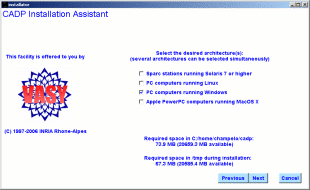
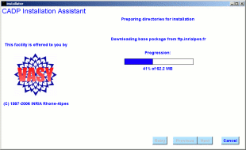
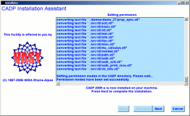
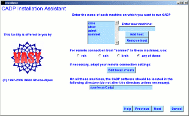

Table of Contents
installator - CADP installation assistant
installator [-beta]
This program installs CADP on one machine or on several machines
connected by a Local Area Network. It can also be used to upgrade an existing
version of CADP already installed. Installator takes in charge the following
tasks:
- Inquiry about the latest version of CADP available on the FTP site
of CADP,
- Download of the latest version of CADP available using the FTP
protocol,
- Archive extraction and installation of CADP on the local machine
or network,
- Registration of CADP using the Request For License procedure.
Although a manual installation of CADP also exists, the use of installator
is strongly recommended, as it ensures that the installation will be done
correctly and automatically.




A few snapshots of Installator
- -beta
- download a beta-version of CADP (instead of a plain, stable
version). Do not use this option unless you have been specifically advised
to do so by the CADP development team.
Exit status is 0 if
everything is alright, 1 otherwise.
Hubert Garavel, Aldo Mazzilli,
Patrick Wendel (INRIA Rhone-Alpes)
installator is a shell script located
in $CADP/com/installator that launches a Tcl/Tk script to be executed by
the wish interpreter. The source files of installator are available in
directory $CADP/src/installator
tst
Additional information
is available from the CADP Web page located at http://cadp.inria.fr
Directives
for installation are given in files $CADP/INSTALLATION_*.
Recent changes
and improvements to this software are reported and commented in file $CADP/HISTORY.
Please report new bugs to Hubert.Garavel@inria.fr
Table of Contents